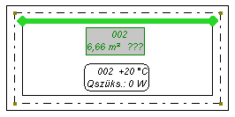
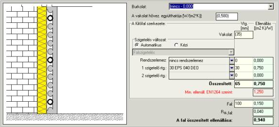
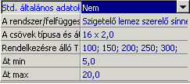

A „Fûtõfal” típusú elemet csak az „Alaprajz” típusú munkalapra tesszük be. Bekapcsolt AUTO üzemmódnál a program az éppen rajzolt fûtõfalat a helyiségben levõ falakhoz húzza.
A „Sugárzó” eszközsávján található nyomógomb:
Megjelenés a képernyõn (alaprajz):

A „Fûtõfal” elem adatai:
A fûtõfal jele
Szövegmezõ. A fûtõfelület jelének címke jellege van, és annak azonosítására szolgál az adatok szerkesztésekor és az eredménytáblázatban. Alapértelmezésként elfogadott jel ugyanolyan, mint a helyiség jele. Ha egy helyiségben több FF van, a program a névhez sorban az abc betûit adja hozzá (pl. Szoba_a, Szoba_b, stb.)
Helyiségben
Választási mezõ. Annak a helyiségnek a jele, ahol a fal található. A program automatikusan hozzárendeli az elemet a helyiséghez, vagy a jelet ki lehet választani egy listából.
ti/qi [°C]
Számmezõ. A helyiség belsõ hõmérséklete, amely az adott helyiséghez van rendelve. Ezt a mezõt nem lehet az FF szintjérõl szerkeszteni. A ti/qi megváltoztatásához át kell lépni a „Konstrukció” rétegre, és ott megváltoztatni ti/qi-t az adott helyiségekben.
ti/qi alatta [°C]
Számmezõ. A fûtõfal másik oldalán levõ hõmérséklet. Az alapértelmezett értéket a felhasználó megváltoztathatja.
Qff//Fop [W]
Számmezõ. A helyiség hõveszteségének az adott fûtõfelülethez rendelt része. A zárójelben levõ érték (auto) azt jelenti, hogy azt a program automatikusan határozta meg a Qff/Fff értékének felosztásakor az adott helyiségben levõ FF-ek között. Ha a helyiség adataiban a "Qff/Fff felosztása ..." mezõben (auto) van beállítva, vagyis a hõveszteség felosztása az egyes FF-ek között automatikusan történik, az FF adataiban a Q/F mezõ nem szerkeszthetõ.
Ellenkezõ esetben (amikor a Qff/Fff kézi felosztása van beállítva a helyiségben) ezt a mezõt szerkeszteni lehet a fal adataiban – vagyis megadni azt a teljesítményt, amelyet az FF-nek le kell adnia.
Csõ nélk. beép. terület [m2]
Számmezõ. A falfûtés csöveivel nem lefedett beépített terület, amely azonban le van fedve állandóan, pl. beépített bútorokkal, káddal, vagy más okból van kikapcsolva a fûtésbõl. Ez a felület csökkenti az FF hasznos területét.
Csõvel ellát. beép. terület [m2]
Számmezõ. A fûtés csöveivel lefedett beépített terület, amely (pl. eltolható bútorok alatt) bele lesz számolva a hasznos területbe. Kiegészítõen meg kell határozni, hogy milyen mértékben vesszük figyelembe az ilyen beépített terület teljesítményét.
A beép. ter. telj. figyelembevétele %
Számmezõ. A csövekkel fedett, beépített terület figyelembe vett teljesítményének százalékosan megadott értéke.
Hasznos terület [m2]
Számmezõ. Az adott FF hasznos területe – a fal fûtõcsövekkel fedett területe. A zárójelben levõ érték a rajzról a fal hossza és az épületszerkezetnél megadott magassági adatok alapján meghatározott felületet jelenti. A hasznos felületet meg lehet adni kézzel. „?” beírása az alapértékhez való visszatérést eredményezi.
Fel. az anyagkim.-hoz [m2]
Számmezõ. Felület az anyagkimutatáshoz, az anyagkimutatásnál, mint pl. a szigetelõlemezeknél vagy rendszerlemezeknél figyelembe vett terület (vagyis a peremsávok levonása nélküli terület). Alapértelmezésben ez a belvilágában vett terület. Ennek a mezõnek az értékére akkor kell figyelni, ha a hasznos területet kézzel adjuk meg. Ez a mezõ lehetõvé teszi, hogy a szigetelõ anyagok kimutatásánál a fal teljes felületét figyelembe vegyük abban az esetben, amikor a fûtõcsövek (tehát az FF) annak csak egy részét fedik le. Ekkor ebbe a mezõbe az érték helyére zárójelben az egész helyiség területét kell írni.
Burkolat
Választási mezõ. Ez a mezõ a burkolat típusának és hõellenállásának meghatározására szolgál. A padlóburkolat hõellenállásának nagyon nagy a jelentõsége a felületfûtés méretezésekor. A kívánt értéket be lehet írni közvetlenül a billentyûzetrõl, vagy felhasználni a rendelkezésre álló változatok listáját, amely a mezõ jobb oldalán levõ nyomógomb megnyomása után jelenik meg. A kiválasztható lehetõségek listája a mezõben a falfûtés kiválasztott gyártójától függ. A burkolat hõellenállásának 0 ... 0,15 [(m2 K)/W] határok közé kell esnie.
A … fal szerk.
Összetett mezõ. A fal szerkezete. Meg lehet nyitni egy szerkesztõ ablakot, amelyben választani lehet a szigetelési változatok automatikus meghatározása, vagy a szigetelési rétegek kézzel történõ megadása között:

Az ablak felsõ részében található az elfogadott burkolat – megváltoztatható. Ez alatt található az a mezõ, amelybe a vakolat hõátbocsájtási tényezõjét lehet beírni [W/(m2K)]. Alatta a fal összegezett vastagságát tartalmazó mezõ. Az alapértelmezett értéket a katalógusból beolvasott minimális vakolatvastagság jelenti, amely a kiválasztott rögzítési rendszertõl és az alkalmazott vakolatfajtától.
Az ablak középsõ részén található szigetelési változat automatikus (alapértelmezett érték) és kézzel történõ megadása közötti átkapcsolást lehetõvé tevõ kapcsoló. Abban az esetben, amikor a kézzel történõ megadás van kiválasztva, ki lehet választani egyet a lista kibontása után látható változatok közül, vagy egyénileg megadni az egyes rétegeket a táblázatban. Maximum 3 szigetelési réteg áll rendelkezésre – rendszerlemez és 2 réteg szigetelõ lemez. Az alsó részen található a fal együtthatós ellenállását és vastagságát figyelembe vevõ mezõ. Ezeket a mezõket szerkeszteni lehet, ami lehetõvé teszi a tipikustól eltérõ esetek figyelembe vételét. Az ablak jobb alsó sarkában van megjelenítve az oldalra ható összegezett ellenállás [(m2 K,)/W], ami a méretezés során figyelembe lesz véve.
tfalf/qfalf max.
Számmezõ. A falfelület maximális hõmérséklete.
A címke fajtája
Választási mezõ. Választási lehetõség a rajzon levõ felület címkéje fajtájának listájából. A „Konfigurálás” kiválasztása után megnyílik az elemek kinézetének ablaka, amelyben létre lehet hozni (másolással) és konfigurálni a rajzon levõ elemek címkéjét. Egy új címke megadása után, az hozzáférhetõvé válik a legördülõ listában, a táblázatban.
Címke a nyomtatáson
Választási mezõ. Lehetõvé teszi a fûtõfal címkéjét tartalmazó mezõ kinyomtatásának kikapcsolását.
Max DeltaP [kPa]
Számmezõ. A minimális nyomásesés az fûtõfalon. A zárójelben levõ érték az általános adatokból átvett, alapértelmezett értéket jelenti.
Az elem állapota:
Választási mezõ. Az elem aktuális állapotának listájából való kiválasztás lehetõsége: meglevõ vagy tervezett. A választásnak ebben a mezõben kizárólag az anyagkimutatásra van hatása.
Std. általános adatok
Választási mezõ. Kiválasztható, hogy az adott fal az általános adatokat használja-e. Az alapértelmezett beállítás: „Igen”. A „Nem”-re való átkapcsolás után az adattáblázatban további mezõk jelennek meg, amelyek lehetõvé teszik az általános adatok módosítását:

Ezek a mezõk lehetõvé teszik a rögzítési rendszer megváltoztatását egy másfajtára, mint az általános adatokban kiválasztott alapértelmezett, az alkalmazott csõ típusúnak és / vagy átmérõjének módosítását, a rendelkezésre álló fektetési kiosztás módosítását, valamint a körben a közeg kihûlése korlátainak megváltoztatását (hõmérsékletkülönbség – Dt/Dq).